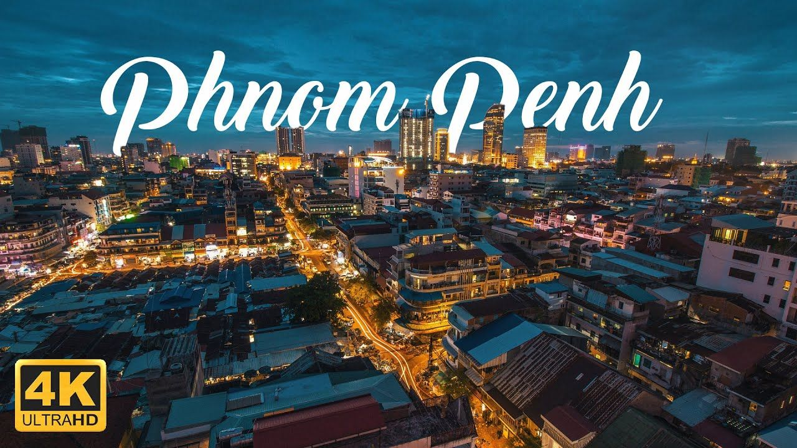
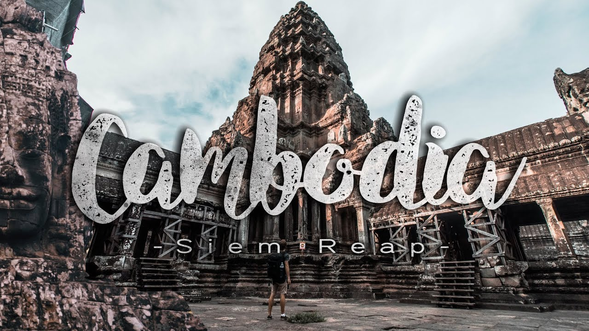
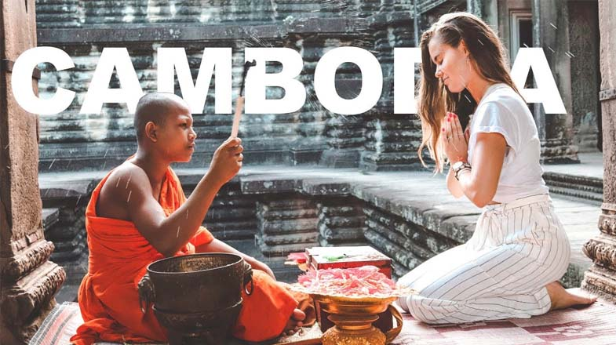
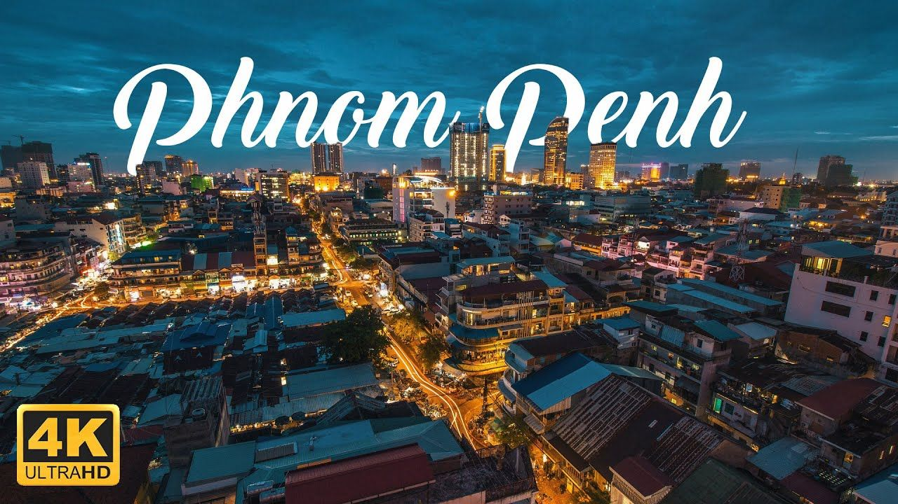
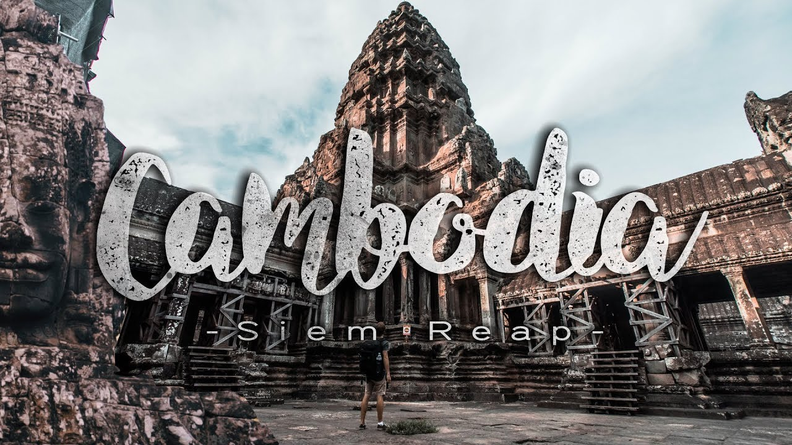
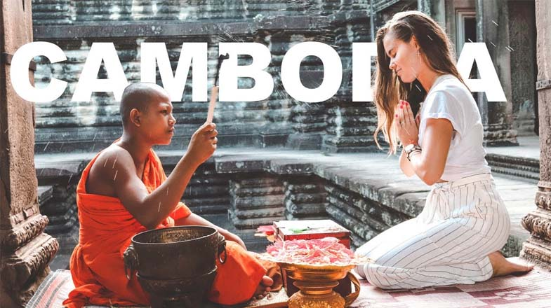

ប្រទេសកម្ពុជាជាប្រទេសអាស៊ីអាគ្នេយ៍ដែលមានទេសភាពលាតសន្ធឹងលើវាលទំនាប ដីសណ្ដទន្លេមេគង្គ ភ្នំ និងឈូងសមុទ្រថៃ។ រាជធានីភ្នំពេញជារាជធានីរបស់ខ្លួនជាទីតាំងនៃផ្សារធំថ្មីដែលមានសិល្បៈតុបតែងលម្អដ៏ស្រស់ស្អាតនៃព្រះបរមរាជវាំង និងវត្ថុតាំងបង្ហាញប្រវត្តិសាស្ត្រ និងបុរាណវត្ថុរបស់សារមន្ទីរជាតិ។ នៅភាគពាយ័ព្យនៃប្រទេសមានប្រាសាទអង្គរវត្តជាប្រាសាទថ្មដ៏ធំដែលត្រូវបានកសាងឡើងក្នុងសម័យអាណាចក្រខ្មែរ។ ព្រះរាជាណាចក្រកម្ពុជា ឬ កម្ពុជា ឈ្មោះផ្លូវការ ព្រះរាជាណាចក្រកម្ពុជា ឬជាសាមញ្ញ ប្រទេសខ្មែរ គឺជាប្រទេសមួយស្ថិតនៅផ្នែកខាងត្បូងនៃឧបទ្វីបឥណ្ឌូចិន ក្នុងអនុតំបន់អាស៊ីអាគ្នេយ៍។ កម្ពុជាមានផ្ទៃក្រឡាសរុប ១៨១,០៣៥ សហាតិមាត្រការ៉េ លាតសន្ធឹងក្នុងរាងពហុកោណស្ទើរស្មើជ្រុង មានព្រំប្រទល់ជាប់ប្រទេសថៃនៅភាគខាងលិចនិងពាយ័ព្យ ប្រទេសឡាវនៅភាគឦសាន្ត ប្រទេសវៀតណាមនៅភាគខាងកើត និងឈូងសមុទ្រថៃនៅភាគនិរតី។ [៧]ដោយមានប្រជាជនជាង ១៦ លាននាក់ កម្ពុជាស្ថិតក្នុងលំដាប់ទី៧២ក្នុងលោក ទី២៧ក្នុងទ្វីបអាស៊ី និងទី៧ក្នុងអាស៊ីអាគ្នេយ៍។ ប្រជាជនជិតពាក់កណ្តាលប្រមូលផ្តុំកុះករនៅតំបន់វាលរាប ទំហំប្រហែល ១៤% នៃផ្ទៃសរុប។ សាសនាជាផ្លូវការ គឺ ព្រះពុទ្ធសាសនាថេរវាទ ដែលកាន់ដោយប្រជាជនប្រហែល ៩០%។ ជនជាតិភាគតិចក្នុងប្រទេសនេះ រួមមាន: ជនជាតិវៀតណាម ចិន ចាម និងកុលសម្ព័ន្ធភ្នំ ៣០ ជនជាតិផ្សេងៗទៀត។ រាជធានី និង ទីក្រុងធំបំផុតគឺ ភ្នំពេញ ដែលជាមជ្ឈមណ្ឌលនយោបាយ សេដ្ឋកិច្ច និង វប្បធម៌នៃកម្ពុជា។ កម្ពុជាជារដ្ឋឯកភាព ក្រោមរបបរាជាធិបតេយ្យអាស្រ័យរដ្ឋធម្មនុញ្ញ និងរបបរដ្ឋសភាប្រជាធិបតេយ្យ ដែលមានព្រះបាទនរោត្តម សីហមុនី ជ្រើសតាំងដោយក្រុមប្រឹក្សារាជសម្បត្តិ ជាព្រះមហាក្សត្រ និងជាព្រះប្រមុខរដ្ឋ។ ប្រមុខរាជរដ្ឋាភិបាល មានហ៊ុន សែន ជានាយករដ្ឋមន្ត្រី ជាមេដឹកនាំដែលកាន់តំណែងយូរបំផុតនៅអាស៊ីអាគ្នេយ៍ ដែលបានដឹកនាំប្រទេសកម្ពុជាអស់រយៈពេលជាង ៣០ ឆ្នាំមកហើយ។ ឯមេដឹកនាំចលនាប្រឆាំងនិងដែលមានប្រជាប្រិយបំផុតក្នុងសង្គមខ្មែរគឺ សម-រង្សុី ដែលធ្លាប់បានជាប់ជាតំណាងរាស្រ្តនៃនីតិកាលទី១ ឆ្នាំ១៩៩៣ មក។ ឈ្មោះបុរាណរបស់កម្ពុជាគឺ "កម្ពុជៈ" (សំស្ក្រឹត: कंबुज)។[៨] នៅឆ្នាំ ៨០២ នៃ គ.ស. ព្រះបាទជយវម៌្មទី២បានប្រកាសព្រះអង្គឯងជាព្រះមហាក្សត្រ ដែលយើងអាចសម្គាល់ឃើញនូវការចាប់កំណើតនៃមហារាជាណាចក្រខ្មែរដ៏រុងរឿងអស់រយៈពេលជាង ៦០០ ប្លាយឆ្នាំ ហើយព្រះមហាក្សត្រសោយរាជ្យបន្តបន្ទាប់ពីទ្រង់នោះ បានបន្តត្រួតត្រាមួយភាគធំនៃអាស៊ីអាគ្នេយ៍ និងប្រមូលផ្ដុំអំណាច ព្រមទាំងភោគទ្រព្យច្រើនលើសលប់ជាងគេ។ ព្រះរាជាណាចក្រឥណ្ឌូបនីយកម្មមួយនេះបានកសាងប្រាសាទបូជនីយដ្ឋាននានា ដូចជាអង្គរវត្ត និងបានសម្រួលដល់ការផ្សព្វផ្សាយសាសនាព្រហ្មញ្ញ ហើយនិងព្រះពុទ្ធសាសនានៅអាស៊ីអាគ្នេយ៍មួយភាគធំ។ បន្ទាប់ពីការធ្លាក់សម័យអង្គរទៅកណ្ដាប់ដៃនៃអយុធ្យានៅសតវត្សទី១៥មក កម្ពុជាបានប្រែក្លាយជាប្រទេសចំណុះមួយនៅចន្លោះប្រទេសជិតខាងរបស់ខ្លួនរហូតដល់ប្រទេសត្រូវបានធ្វើអាណានិគមកិច្ចដោយពួកបារាំងនៅពាក់កណ្ដាលសតវត្សទី១៩។ កម្ពុជាទទួលបានឯករាជ្យពីបារាំងមកវិញនៅឆ្នាំ ១៩៥៣។ សង្គ្រាមវៀតណាមបានរីករាលដាលដល់កម្ពុជា ដែលធ្វើឱ្យមានការងើបឡើងរបស់ពួកខ្មែរក្រហម ដែលពួកនោះបានដណ្ដើមកាន់កាប់បានទីក្រុងភ្នំពេញនៅឆ្នាំ ១៩៧៥ ហើយបានបន្ដការប្រល័យពូជសាសន៍ខ្មែរ ចាប់ពីឆ្នាំ ១៩៧៥-១៩៧៩ និងក្រោយមកបានវាយប្រយុទ្ធនឹងពួកយួនដែលនៅពីក្រោយខ្នងរបបសាធារណរដ្ឋប្រជាមានិតកម្ពុជាកំឡុងសម័យសង្គ្រាមកម្ពុជា-វៀតណាម (១៩៧៩-១៩៩១)។ បន្តបន្ទាប់ពីកិច្ចព្រមព្រៀងសន្តិភាពទីក្រុងប៉ារីស១៩៩១ កម្ពុជាត្រូវបានអភិបាលកិច្ចមួយរយៈពេលខ្លីដោយក្រុមបេសកកម្មសហប្រជាជាតិ (១៩៩២-១៩៩៣) ក្រោយពីការបោះឆ្នោតទៅ គេឃើញមានអ្នកបោះឆ្នោតប្រហែល ៩០% បានបោះឆ្នោត ហើយអង្គការសហប្រជាជាតិ ក៏បានដកថយចេញពីកម្ពុជាទៅវិញ។ រដ្ឋប្រហារឆ្នាំ១៩៩៧ បានធ្វើឱ្យលោកហ៊ុន សែន និង គណបក្សប្រជាជនកម្ពុជារបស់លោក ស្ថិតនៅក្នុងអំណាចរហូតដល់ឆ្នាំ២០១៧ សព្វថ្ងៃនេះ។ កម្ពុជាបានងើបមុខឡើងវិញប៉ុន្មានឆ្នាំក្រោយមកក្នុងមណ្ឌលនៃឥទ្ធិពលសង្គមនិយម ជាសាធារណរដ្ឋប្រជាមានិតកម្ពុជារហូតដល់ឆ្នាំ ១៩៩៣។ បន្ទាប់ពីប៉ុន្មានឆ្នាំនៃគម្លាតឆ្ងាយ ប្រជាជាតិដែលត្រូវបានបំផ្លិចបំផ្លាញដោយសារសង្គ្រាមមួយនេះ បានបង្រួបបង្រួមគ្នាឡើងវិញក្រោមរបបរាជាធិបតេយ្យនៅឆ្នាំ ១៩៩៣ និងបានស្គាល់នូវការរីកចម្រើនយ៉ាងលឿនក្នុងវិស័យសេដ្ឋកិច្ច និងធនធានមនុស្ស ដែលពេលនោះកំពុងតែរស់រានឡើងវិញក្រោយពីប៉ុន្មានទសវត្សនៃសង្គ្រាមរដ្ឋប្បវេណីមក។ កម្ពុជាធ្លាប់មានកំណត់ត្រាមួយក្នុងចំណោមកំណត់ត្រាសេដ្ឋកិច្ចដ៏ល្អបំផុតនៅអាស៊ី ជាមួយនឹងកំណើនសេដ្ឋកិច្ចជាមធ្យម ៦,០% ក្នុងរយៈពេល ១០ ឆ្នាំចុងក្រោយនេះ។ វិស័យវាយនភណ្ឌ កសិកម្ម សំណង់ សម្លៀកបំពាក់ និង ទេសចរណ៍ដ៏ខ្លាំងក្លាបាននាំឱ្យមានការបណ្ដាក់ទុនបរទេស និងការដោះដូរពាណិជ្ជកម្មអន្តរជាតិ។[៩] នៅឆ្នាំ២០០៥ ស្រទាប់រ៉ែប្រេង និងឧស្ម័នធម្មជាតិត្រូវបានរកឃើញខាងក្រោមទឹកក្នុងទឹកដីកម្ពុជា និងគ្រានោះដែរនិស្សារណកម្មពាណិជ្ជកម្មនឹងចាប់ផ្ដើមក្នុងឆ្នាំ ២០១៣ ចំណូលប្រេងទាំងមូលអាចជះឥទ្ធិពលដល់សេដ្ឋកិច្ចកម្ពុជាយ៉ាងខ្លាំង។[១០] ទោះបីមានការរីកចម្រើនខាងសេដ្ឋកិច្ចយ៉ាងណាក្ដី ពេលតែមួយក្នុងឆ្នាំ ២០១៣ នោះដែរ លិបិក្រមអភិវឌ្ឍន៍មនុស្ស (លអម) ចាត់ថ្នាក់កម្ពុជាក្នុងចំណាត់ថ្នាក់ទី១៣៨ (រួមជាមួយ លាវ) ក្នុងលក្ខខណ្ឌនៃការអភិវឌ្ឍមនុស្សចង្អុលបង្ហាញថាកម្ពុជាមានការរីកចម្រើនពីមធ្យមមកទាបមកទល់សព្វថ្ងៃនេះ។
 




